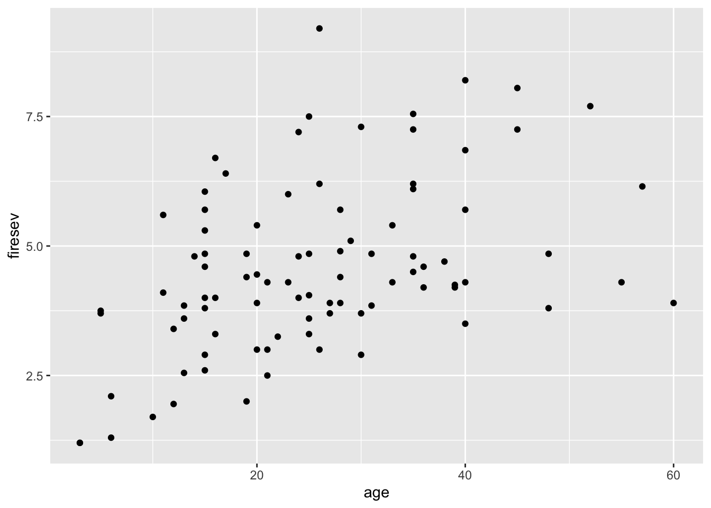

In this lab, we’ll look at an alternative way of fitting structural equation models (SEMs) using a piecewise approach. This method was developed by Shipley and coworkers over the past 15 years, and has a number of advantages, mainly including a broader range of data types and structures within the SEM. We will use the following datasets:
The Grace and Keeley fire/plant abundance dataset (keeley.csv)
A data set of tree mortality from Shipley (2009): shipley.csv
As the name implies, this approach works by piecing together individual models, each of which describes one endogenous variable in the graph. This contrasts with the covariance-based approach of lavaan and semopy that try to estimate a single model of the covariance model underlying the system. As a result, each individual model can be built using different assumptions (generalized linear models, non-linear models, etc), and we will explore some of this here.
Currently, this approach is only available through the R library piecewiseSEM developed by Lefcheck (https://doi.org/10.1111/2041-210X.12512). It is possible to carry out a similar in other languages, but some of the tests and visualizations would require additional work.
Grace and Keeley Dataset
Data and libraries
As ever, let’s start by loading the libraries we will need:
library(tidyverse)
── Attaching core tidyverse packages ──────────────────────── tidyverse 2.0.0 ──
✔ dplyr 1.1.4 ✔ readr 2.1.5
✔ forcats 1.0.0 ✔ stringr 1.5.1
✔ ggplot2 3.5.1 ✔ tibble 3.2.1
✔ lubridate 1.9.3 ✔ tidyr 1.3.1
✔ purrr 1.0.2
── Conflicts ────────────────────────────────────────── tidyverse_conflicts() ──
✖ dplyr::filter() masks stats::filter()
✖ dplyr::lag() masks stats::lag()
ℹ Use the conflicted package (<http://conflicted.r-lib.org/>) to force all conflicts to become errors
library(correlation)library(piecewiseSEM)
This is piecewiseSEM version 2.3.0.
Questions or bugs can be addressed to <LefcheckJ@si.edu>.
library(lme4)
Loading required package: Matrix
Attaching package: 'Matrix'
The following objects are masked from 'package:tidyr':
expand, pack, unpack
library(mgcv)
Loading required package: nlme
Attaching package: 'nlme'
The following object is masked from 'package:lme4':
lmList
The following object is masked from 'package:dplyr':
collapse
This is mgcv 1.9-1. For overview type 'help("mgcv-package")'.
library(sf)
Linking to GEOS 3.11.0, GDAL 3.5.3, PROJ 9.1.0; sf_use_s2() is TRUE
library(tmap)
Breaking News: tmap 3.x is retiring. Please test v4, e.g. with
remotes::install_github('r-tmap/tmap')
library(nlme)library(ape)
Attaching package: 'ape'
The following object is masked from 'package:dplyr':
where
Before building the full SEM for these data, we’ll start with the simple three variable model that includes age, firesev and cover. To build the piecewise model, there are a couple of options: you can build the individual models within the piecewise function (psem) or you can build the individual models first, then use psem to link them. We’ll use this second approach as it is a little easier to check what is going on.
As a reminder, this is the DAG for the three variable model, as a partially mediated model:
Attaching package: 'ggdag'
The following object is masked from 'package:stats':
filter
The two endogenous variables are fire severity (firesev) and canopy cover (cover), so let’s build the two models that describe these according to the DAG using simple OLS linear regression:
mod1 <-lm(firesev ~ age, data = keeley)mod2 <-lm(cover ~ age + firesev, data = keeley)
As these are just basic linear models, you can use all the usual functions to check them and get more information. Here is the summary output for them:
summary(mod1)
Call:
lm(formula = firesev ~ age, data = keeley)
Residuals:
Min 1Q Median 3Q Max
-2.7199 -1.1131 -0.1747 0.9603 4.6091
Coefficients:
Estimate Std. Error t value Pr(>|t|)
(Intercept) 3.03921 0.35543 8.551 3.45e-13 ***
age 0.05968 0.01249 4.778 7.03e-06 ***
---
Signif. codes: 0 '***' 0.001 '**' 0.01 '*' 0.05 '.' 0.1 ' ' 1
Residual standard error: 1.481 on 88 degrees of freedom
Multiple R-squared: 0.206, Adjusted R-squared: 0.197
F-statistic: 22.83 on 1 and 88 DF, p-value: 7.028e-06
summary(mod2)
Call:
lm(formula = cover ~ age + firesev, data = keeley)
Residuals:
Min 1Q Median 3Q Max
-0.49374 -0.22801 -0.06249 0.19985 0.81227
Coefficients:
Estimate Std. Error t value Pr(>|t|)
(Intercept) 1.121762 0.092030 12.189 < 2e-16 ***
age -0.004833 0.002682 -1.802 0.07503 .
firesev -0.067244 0.020399 -3.296 0.00142 **
---
Signif. codes: 0 '***' 0.001 '**' 0.01 '*' 0.05 '.' 0.1 ' ' 1
Residual standard error: 0.2833 on 87 degrees of freedom
Multiple R-squared: 0.2202, Adjusted R-squared: 0.2023
F-statistic: 12.28 on 2 and 87 DF, p-value: 2.003e-05
Both models explain about 20% of the variance in the outcome, which is not great, but the coefficients and models do show significance.
Now, we’ll build the piecewise SEM. This does not require refitting the models, but instead links them together to allow for testing.
As you can see, the model object simply contains a list of the component models and a brief overview of the data. To test the overall SEM, we need to use the summary function:
summary(keeley_psem1)
Structural Equation Model of keeley_psem1
Call:
firesev ~ age
cover ~ age + firesev
AIC
363.399
---
Tests of directed separation:
No independence claims present. Tests of directed separation not possible.
--
Global goodness-of-fit:
Chi-Squared = 0 with P-value = 1 and on 0 degrees of freedom
Fisher's C = NA with P-value = NA and on 0 degrees of freedom
---
Coefficients:
Response Predictor Estimate Std.Error DF Crit.Value P.Value Std.Estimate
firesev age 0.0597 0.0125 88 4.7781 0.0000 0.4539 ***
cover age -0.0048 0.0027 87 -1.8018 0.0750 -0.1914
cover firesev -0.0672 0.0204 87 -3.2965 0.0014 -0.3502 **
Signif. codes: 0 '***' 0.001 '**' 0.01 '*' 0.05
---
Individual R-squared:
Response method R.squared
firesev none 0.21
cover none 0.22
And again, there’s a lot of output. Let’s go through this from top to bottom:
Structural Equation Model: this first section describes the models that were linked, as well as returning the AIC for the full PSEM model (note that this is the just the sum of the individual AICs)
Tests of directed separation: This section tests any missing paths in the model to see if excluding them is justified or not. As the model we have fit is just identified (or saturated), then there are no missing paths to test
Global goodness-of-fit: Two tests are presented here. The first is an approximation of the Chi-squared test used in covariance models. The second (Fisher’s \(C\)) is based on the d-separation tests
Coefficients: a summary of the model coefficients, including standardized coefficients. This should give the same results as the summaries of the two individual lm models above
Individual R-squared: the variance explained for each endogenous variable
In this case, the model is just identified, so the additional work of fitting the SEM cannot provide us with any additional information.
Three variable model 2
Now let’s drop the path between age and cover, refit the models and re-run the PSEM.
mod1 <-lm(firesev ~ age, data = keeley)mod2 <-lm(cover ~ firesev, data = keeley)keeley_psem2 <-psem( mod1, mod2,data = keeley)
And now test the model (we’ll suppresses the progress bar for the purposes of this document):
summary(keeley_psem2, .progressBar =FALSE)
Structural Equation Model of keeley_psem2
Call:
firesev ~ age
cover ~ firesev
AIC
364.696
---
Tests of directed separation:
Independ.Claim Test.Type DF Crit.Value P.Value
cover ~ age + ... coef 87 -1.8018 0.075
--
Global goodness-of-fit:
Chi-Squared = 3.297 with P-value = 0.069 and on 1 degrees of freedom
Fisher's C = 5.18 with P-value = 0.075 and on 2 degrees of freedom
---
Coefficients:
Response Predictor Estimate Std.Error DF Crit.Value P.Value Std.Estimate
firesev age 0.0597 0.0125 88 4.7781 0 0.4539 ***
cover firesev -0.0839 0.0184 88 -4.5594 0 -0.4371 ***
Signif. codes: 0 '***' 0.001 '**' 0.01 '*' 0.05
---
Individual R-squared:
Response method R.squared
firesev none 0.21
cover none 0.19
Now building the PSEM makes sense - we’re able to test whether excluding the age to cover path makes sense. Both the Chi-squared and Fisher’s \(C\) test are non-significant, which indicates that there is no support for this path in the data, which in turn confirms that excluding it makes sense. This is also shown in the d-separation tests, which shows a test for this excluded path, and the lack of significance further supports the absence of this path. In fact, as we are only excluding a single path, the d-separation and Fisher’s \(C\) test are equal.
piecewiseSEM also comes with visualization function. We’ll use it here to show the paths for this second model, as well as the unstandardized coefficients. (This is built on top of DiagrammeR, a general network visualization package in R, which can be used to further modify the plot.)
plot(keeley_psem2, show ="unstd")
PSEM model
Full model
We’ll finish this section by building the full Grace and Keeley model. The code below builds the individual models with the psem function to minimize the code, but you can try to build these first then link them together:
keeley_psem3 <-psem(lm(hetero ~ distance, data = keeley),lm(abiotic ~ distance, data = keeley),lm(age ~ distance, data = keeley),lm(firesev ~ age, data = keeley),lm(cover ~ firesev, data = keeley),lm(rich ~ distance + abiotic + hetero + cover, data = keeley),data = keeley)summary(keeley_psem3, .progressBar =FALSE)
And we’ll show the plot with standardized coefficients to easier comparison between the paths:
plot(keeley_psem3, show ="std", ns_dashed =TRUE)
PSEM model
There is, not surprisingly, much more output here. There are more individual models, more paths, and more missing paths as shown by the large number of d-separation tests. Note that, unlike the covariance approaches, this function uses the structure of the graph ito intuit the direction of the missing paths (i.e. it tests firesev ~ distance not the other way around).
The two global tests provide slightly different information this time. The Chi-squared test is significant, whereas \(C\) is not (although it is close). From the d-sep tests, you should see that one missing path is flagged as significant. Try not to rebuild and test this SEM with the additional path added back in. Check the AIC of the previous model and this one to see whether including this appears to made an overall improvement.
Nonlinear models
next, we’ll look very quickly at an example of including a non-linear model (a spline-based generalized additive model). We’ll make a new version of the second 3-variable model, which includes paths from age to firesev and firesev to cover. For this, we’ll add a nonlinear relationship for the first of these, based on the following scatterplot which shows a weakening of the link between these variables at higher values of age:
ggplot(keeley, aes(x = age, y = firesev)) +geom_point()

To do this, we’ll use the gam() function from the library mgcv. We’ll simply replace the first of the two models using this function and the s() to indicate using a smoothing spline to model the response of firesev to age:
mod1 <-gam(firesev ~s(age), data = keeley)mod2 <-lm(cover ~ firesev, data = keeley)keeley_psem4 <-psem( mod1, mod2,data = keeley)summary(keeley_psem4, .progressBar =FALSE)
Warning: Basis set includes smoothed terms in independence claim: claim is
conducted with linear term!
Warning: Categorical or non-linear variables detected. Please refer to
documentation for interpretation of Estimates!
Structural Equation Model of keeley_psem4
Call:
firesev ~ s(age)
cover ~ firesev
AIC
361.226
---
Tests of directed separation:
Independ.Claim Test.Type DF Crit.Value P.Value
cover ~ s(age) + ... coef 87 -1.8018 0.075
--
Global goodness-of-fit:
Chi-Squared = 3.297 with P-value = 0.069 and on 1 degrees of freedom
Fisher's C = 5.18 with P-value = 0.075 and on 2 degrees of freedom
---
Coefficients:
Response Predictor Estimate Std.Error DF Crit.Value P.Value Std.Estimate
firesev s(age) - - 2.7886 10.1726 0 -
cover firesev -0.0839 0.0184 88.0000 -4.5594 0 -0.4371
***
***
Signif. codes: 0 '***' 0.001 '**' 0.01 '*' 0.05
---
Individual R-squared:
Response method R.squared
firesev none 0.24
cover none 0.19
A couple of things to note here. This doesn’t change the global model fit: these tests are based on the same missing path as the previous model. Second, there is no coefficient listed for the first model: as this is a nonlinear model, there is no single coefficient. If you want to see what this looks like, you can simply plot the individual model response:
plot(keeley_psem4[[1]])
Let’s finish this section by comparing the AIC of these two models to see if including the smoother improves overall model fit (despite the additional complexity):
AIC(keeley_psem2, keeley_psem4)
AIC K n
1 364.696 6.000 90
2 361.226 7.208 90
Generalized and mixed effects models
For this example, we’ll use a synthetic dataset of tree growth and survival from Shipley’s 2009 paper. These data are longitudinal, with repeated observations for each tree. The trees are also grouped by site (there are 20 sites). The model that we will fit follows this graph:
shipley_dag <-dagify(DD ~ lat, date ~ DD, growth ~ date, live ~ growth,coords =list(x =c(lat =1,DD =2,date =3,growth =4,live =5), y =c(lat =1,DD =2,date =3,growth =2,live =1) ),labels =c(lat ="Latitude",DD ="Degree Day",date ="Date",growth ="Growth",live ="Live"))ggdag(shipley_dag, use_labels ="label", text =FALSE) +theme_dag()
The DAG represents the following processes (taken from Shipley (2009)):
Latitude and year generate the number of degree-days at each site. Degree-days then cause the date of bud burst of a tree species. The date of bud burst causes the amount of diameter growth, and diameter growth determines the survival in the subsequent winter
shipley %>%mutate(tree =as.factor(tree),site =as.factor(site)) %>%ggplot(aes(x = year, y = Growth, col = tree)) +geom_line() +facet_wrap(~site) +theme_bw() +theme(legend.position ="none")
Warning: Removed 469 rows containing missing values or values outside the scale range
(`geom_line()`).
There are two additional complexities with these data.
First, the outcome we want to model is a binary variable (1 = live in a given year, 0 = dead). The appropriate model for these data is a binomial model with a logit link function.
The second is that the data are grouped: we have repeated observations by tree (for multiple year) and by site (for multiple trees). To account for this structure, we would need to include random effects for both site and tree.
We’ll use R’s lme4 library to build these models. For the first three paths, we’ll assume a linear reponse, so we can use the lmer() function. Random effects are included by the following syntax + (1 | g) where g is the grouping variable (site or tree here).
mod1 <-lmer(DD ~ lat + (1| tree) + (1| site), data = shipley)mod2 <-lmer(Date ~ DD + (1| tree) + (1| site), data = shipley)mod3 <-lmer(Growth ~ Date + (1| tree) + (1| site), data = shipley)
As before, you can check any of the individual models with the summary() function or any other standard diagnostics.
summary(mod1)
Linear mixed model fit by REML ['lmerMod']
Formula: DD ~ lat + (1 | tree) + (1 | site)
Data: shipley
REML criterion at convergence: 9157.6
Scaled residuals:
Min 1Q Median 3Q Max
-2.51037 -0.77506 -0.05222 0.77363 2.62452
Random effects:
Groups Name Variance Std.Dev.
tree (Intercept) 2.539 1.593
site (Intercept) 20.157 4.490
Residual 32.139 5.669
Number of obs: 1431, groups: tree, 100; site, 20
Fixed effects:
Estimate Std. Error t value
(Intercept) 196.6524 7.6606 25.671
lat -0.8355 0.1194 -6.996
Correlation of Fixed Effects:
(Intr)
lat -0.991
For the Live variable, we’ll need to specify a binomial model using glmer, with appropriate family arguments
mod4 <-glmer(Live ~ Growth + (1| tree) + (1| site), family =binomial(link ="logit"), data = shipley)
We can now link all of these using psem to create the PSEM:
Warning: NAs detected in the dataset. Consider removing all rows with NAs to
prevent fitting to different subsets of data
summary(shipley_psem1, .progressBar =FALSE)
boundary (singular) fit: see help('isSingular')
boundary (singular) fit: see help('isSingular')
boundary (singular) fit: see help('isSingular')
Structural Equation Model of shipley_psem1
Call:
DD ~ lat
Date ~ DD
Growth ~ Date
Live ~ Growth
AIC
21745.782
---
Tests of directed separation:
Independ.Claim Test.Type DF Crit.Value P.Value
Date ~ lat + ... coef 18.0428 0.0064 0.9373
Growth ~ lat + ... coef 18.2781 0.7972 0.3835
Live ~ lat + ... coef 1431.0000 1.0282 0.3038
Growth ~ DD + ... coef 783.7024 0.0861 0.7693
Live ~ DD + ... coef 1431.0000 1.0036 0.3156
Live ~ Date + ... coef 1431.0000 -1.5627 0.1181
--
Global goodness-of-fit:
Chi-Squared = NA with P-value = NA and on 6 degrees of freedom
Fisher's C = 11.532 with P-value = 0.484 and on 12 degrees of freedom
---
Coefficients:
Response Predictor Estimate Std.Error DF Crit.Value P.Value
DD lat -0.8355 0.1194 17.9831 48.9350 0
Date DD -0.4976 0.0049 1337.0585 10171.1806 0
Growth Date 0.3007 0.0266 1400.8657 126.4361 0
Live Growth 0.3479 0.0584 1431.0000 5.9544 0
Std.Estimate
-0.7014 ***
-0.6281 ***
0.3824 ***
0.7866 ***
Signif. codes: 0 '***' 0.001 '**' 0.01 '*' 0.05
---
Individual R-squared:
Response method Marginal Conditional
DD none 0.48 0.69
Date none 0.41 0.98
Growth none 0.11 0.84
Live theoretical 0.56 0.63
Some things to note in this output:
You will like have seen some warnings about singular fits: this suggests that some of the models that include the d-separated variable paths could not be fit well, and may suggest that some data standardization is necessary.
With that caveat in mind, none of the missing paths were significant
Fisher’s \(C\) supports this, suggesting that the model (and DAG) and well supported by the data
The Chi-squared test cannot be calculated due to the presence of the binomial model
The coefficient shown for the binomial model (~0.348) is on the logit scale (from the binomial model). To convert this to odds, simply take the anti-log (exp), which should give you a value of approximately 1.4, indicating an increasing survival probability with higher growth.
PSEM model
Spatial models
As a last example, we’ll look at the use of spatial models within piecewiseSEM. As a reminder, our concern with spatial models is that the errors or residuals will be autocorrelated, which implies that the standard errors and model \(p\)-values will be biased. Incorporating spatial covariance can then help to accoutn for this. To illustrate, we’ll use a data set of (more!) trees taken from a forest plot from the Volzhsko-Kamsky reserve in Russia. This example is lightly modified from Jed Byrnes’ SEM workshop (https://jebyrnes.github.io/semclass). Let’s start by reading in the data:
The richness model is not particularly good here, but does show some significance in the relationship with temperature (temp).
As these are spatial data, it’s important to check for autocorrelation in the residuals. We can first do this by mapping these out. If there’s little or no autocorrelation, then the pattern should be random. The residuals function will extract the residuals for both models (richness and NDVI):
While there’s some pattern, it’s not particularly clear. Instead, we can use Moran’s \(I\) to test if there is any significant pattern that we need to worry about. Moran’s \(I\) requires an adjacency matrix: a matrix describing the proximity of each observation to the others. For point data, we can estimate this simply as the inverse distance between observations. (Note that the diagonal needs to be set to zero to avoid self referencing):
In both cases, the low \(p\)-value indicates that the residuals are correlated. To fix this, we can replace the OLS-based lm models with generalized least squares (GLS) models. GLS allows the incorporation of covariance models. These can account for autocorrelation from a variety of sources: space, time and groups. The R library nlme has functions for GLS models, including a range of covariance type (see help(corClasses) for the full range). We’ll use one of the simplest (corExp), which assumes that spatial dependency (or autocorrelation) declines exponentially with distance between observations. We’ll use the same function in both models (richness and NDVI), so let’s create a single object to be used in both:
#Fit using spatial autocorrelationspaceCor <-corExp(form =~ x+y, nugget =TRUE)
Now we’ll build the GLS models, including the corvariance functions with with correlation argument:
And we can now use Moran’s \(I\) to test if using the covariance functions has accounted for the autocorrelation. (The argument type="normalized" indicates that we want the adjusted residuals.)
Now the results show no significance in the richness model, and no significance for the path richness -> NDVI (shown in the plot below as dashed lines). In the first model (above), both of these were found to be significant; accounting for the autocorrelation helps to removeor reduce the bias from this, and (in this case) shows that our assumed DAG is not supported by the data, and a simpler set of paths would be sufficient.
plot(boreal_psem2)
PSEM model
Appendix: Data files
Grace and Keeley dataset keeley.csv
Column header
Variable
distance
Distance to coast (m)
elev
Elevation a.s.l.
abiotic
Abiotic favorability
age
Age of stand before fire
hetero
Plot heterogeneity
firesev
Severity of fire
cover
Cover of plants
rich
Plant species richness
Shipley dataset shipley.csv
This is a synthetic dataset on tree growth and survival.
Column header
Variable
site
Site of observation
tree
Tree ID
lat
Site latitude
year
Year of observation
Date
Date of first bud burst
DD
Cumulative degree days until first bud burst
Growth
Annual increase in stem diameter
Survival
Proportional survival
Live
Alive (1) or dead (0)
Boreal dataset boreal.csv
This dataset is taken from Alain Zuur’s book “Mixed Effects Models and Extensions in Ecology with R”